Temporadas
Resúmenes sin grandes spoilers. Toca una temporada para abrirla.
Temporada 1 (2016)
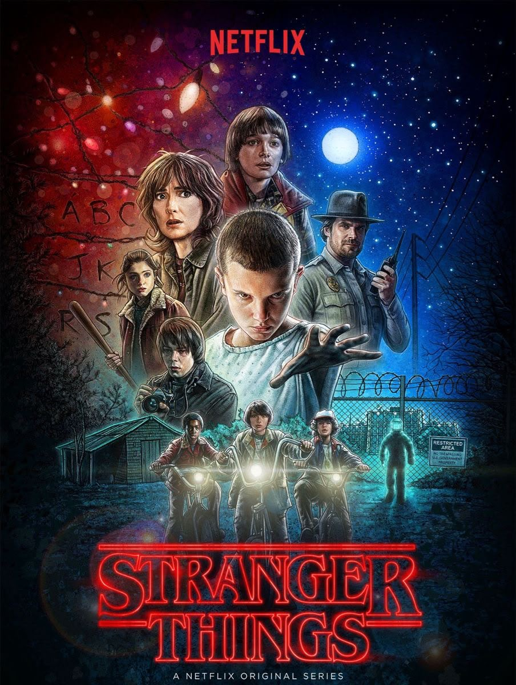
- Historia: Noviembre de 1983
- Amenaza: Demogorgon
Will Byers desaparece de camino a casa y todo el pueblo empieza a buscarlo. Sus amigos conocen a Eleven, una niña con poderes que escapó del Laboratorio de Hawkins. Juntos descubren el Upside Down y a la criatura que se llevó a Will.
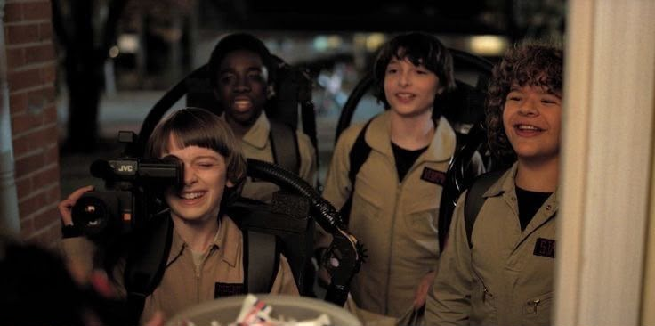
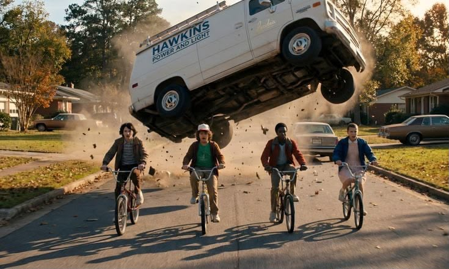
Temporada 2 (2017)
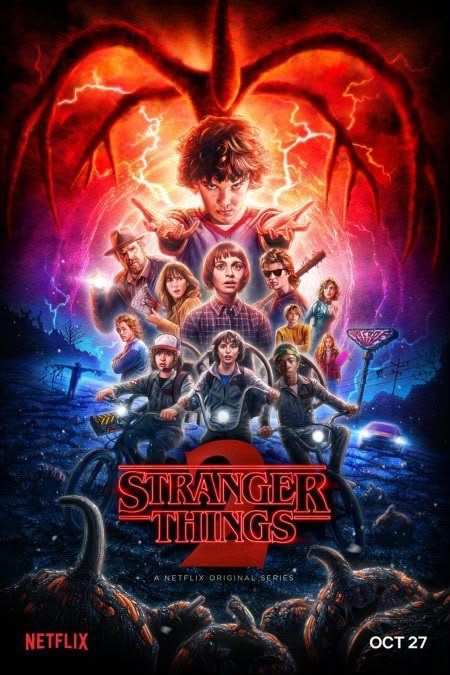
- Historia: Octubre de 1984
- Amenaza: Mind Flayer
Will sigue conectado con el Upside Down y tiene visiones de una enorme sombra. Llegan Max y su hermano Billy, Dustin adopta una criatura misteriosa y Eleven busca respuestas sobre su pasado. El grupo debe cerrar una puerta que se abre bajo el Laboratorio.
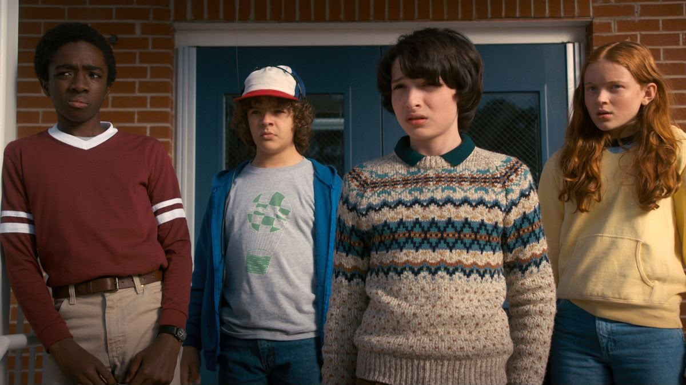
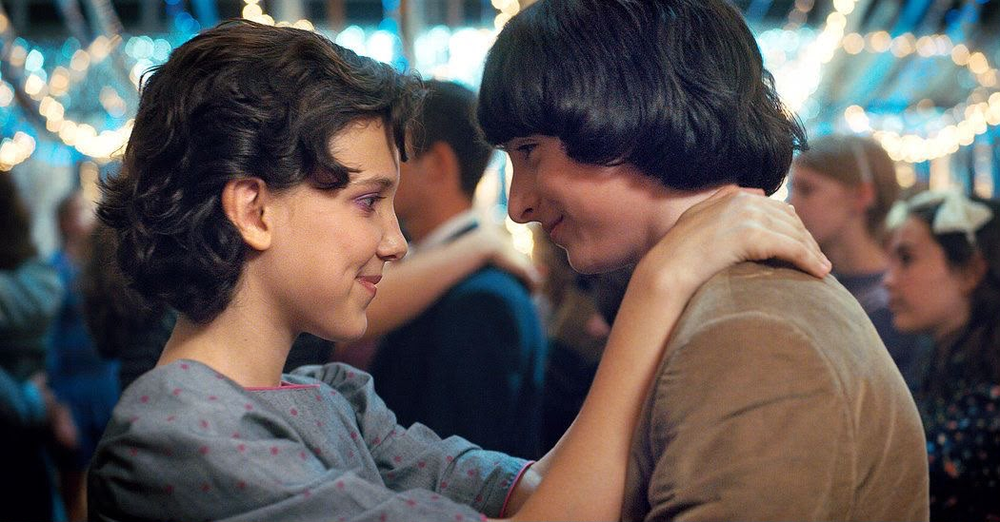
Temporada 3 (2019)
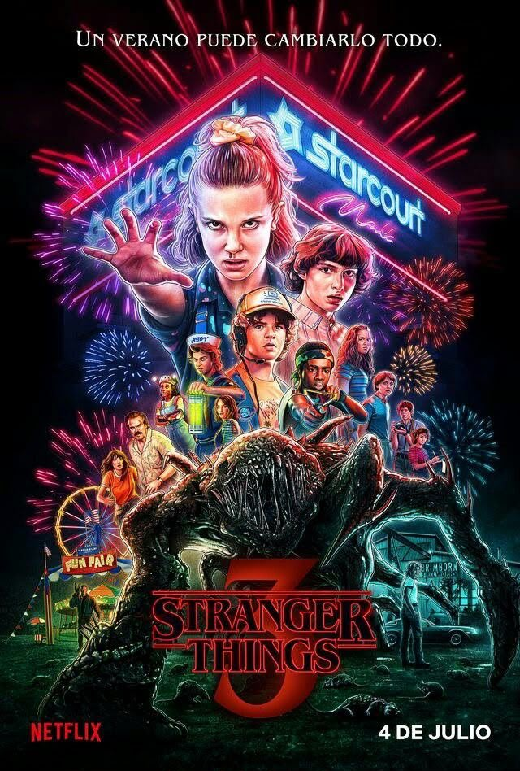
- Historia: Verano de 1985
- Amenaza: Mind Flayer y los rusos
Abre el Starcourt Mall en Hawkins, pero bajo él se esconde una operación secreta. El Mind Flayer vuelve a controlar a personas del pueblo y los amigos deben detenerlo en pleno verano. La temporada termina con una despedida dolorosa y una mudanza.
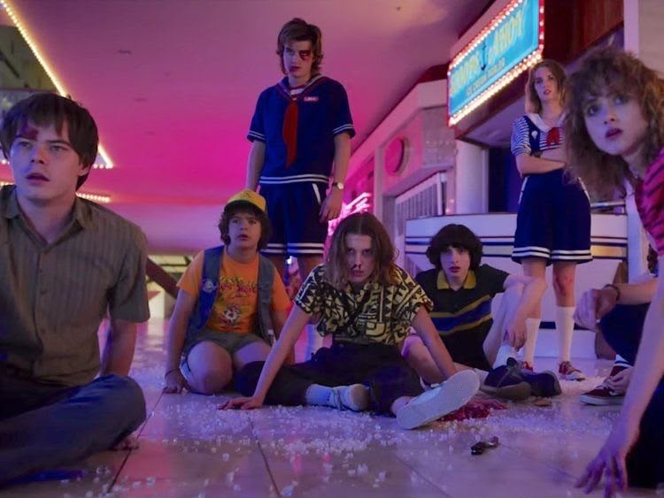
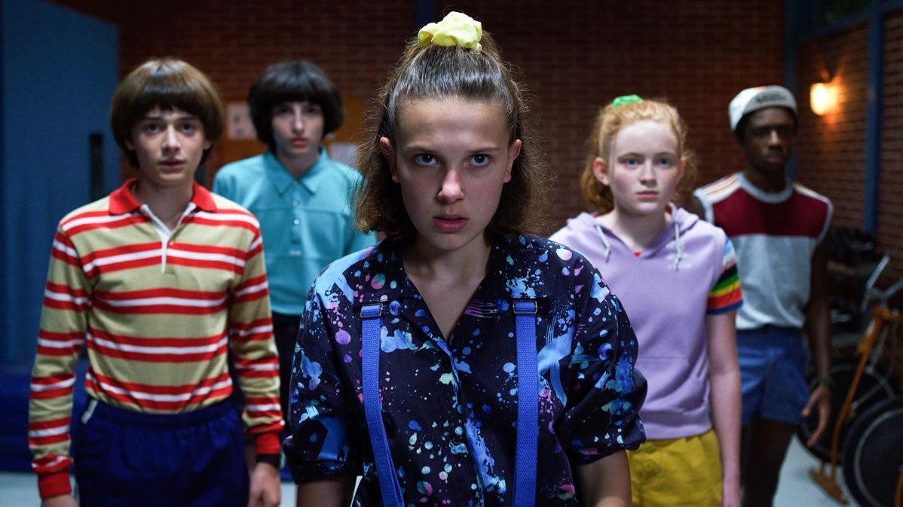
Temporada 4 (2022)
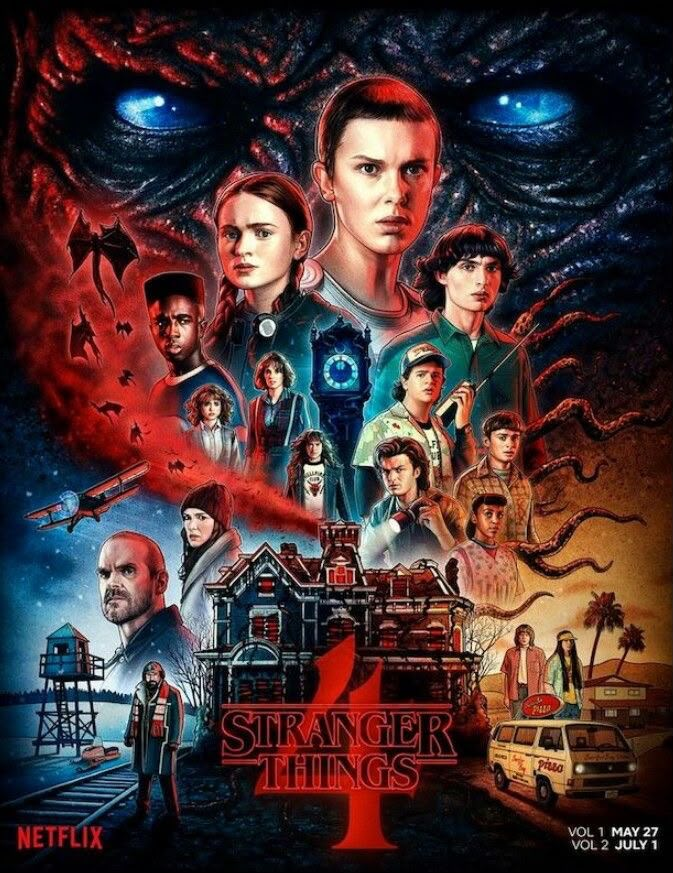
- Historia: Marzo de 1986
- Amenaza: Vecna
El grupo se separa: unos viajan a California y otro personaje es buscado en Rusia. En Hawkins, un nuevo ser llamado Vecna ataca a jóvenes marcados por sus traumas. Para detenerlo, los amigos deben entender su origen. El final deja a Hawkins en grave peligro.
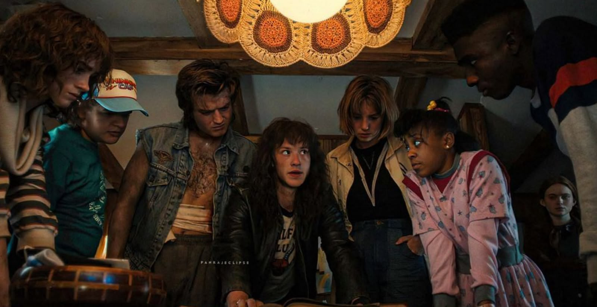
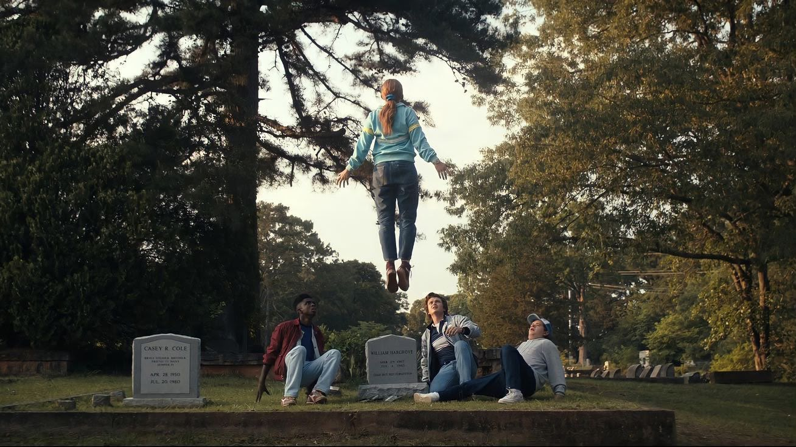
Temporada 5 (2025)
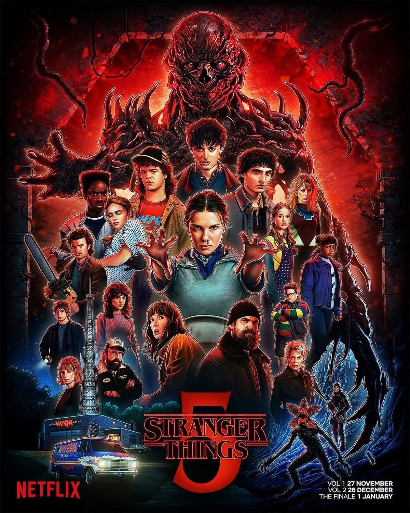
- Historia: Otoño de 1987
- Amenaza: Vecna
La temporada final transcurre en Hawkins, ahora bajo control militar por las grietas hacia el Upside Down. Los héroes, ya mayores, se preparan para el enfrentamiento definitivo. Es el cierre de la historia que empezó en 1983.
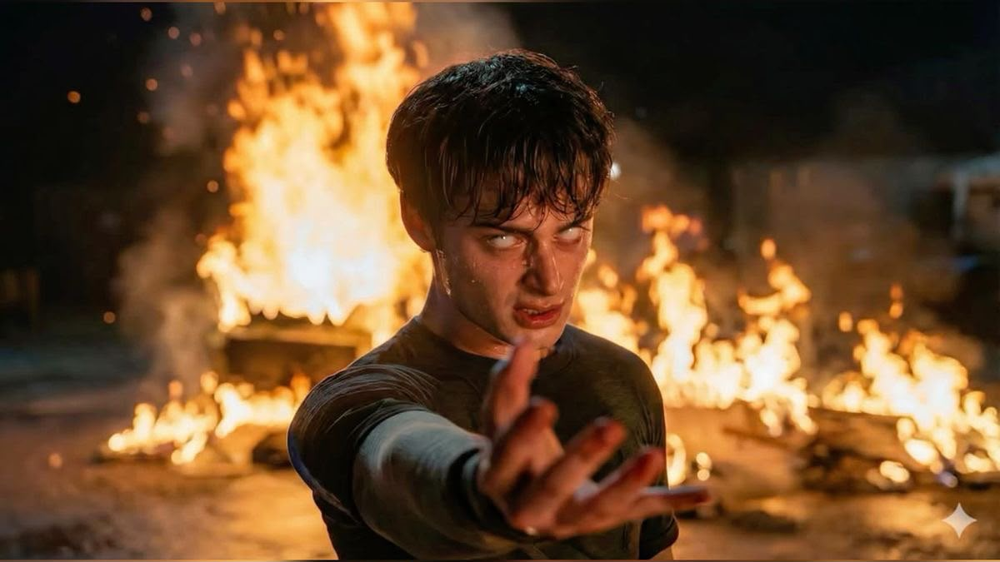
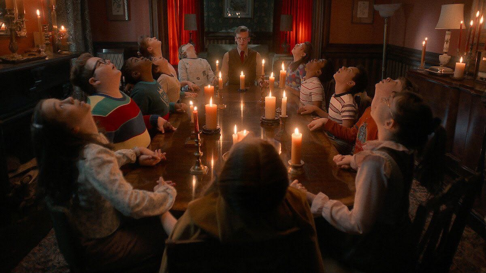